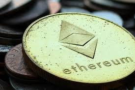
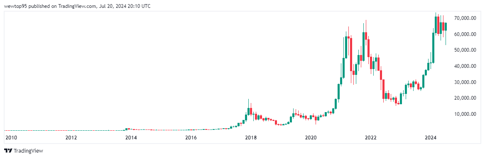
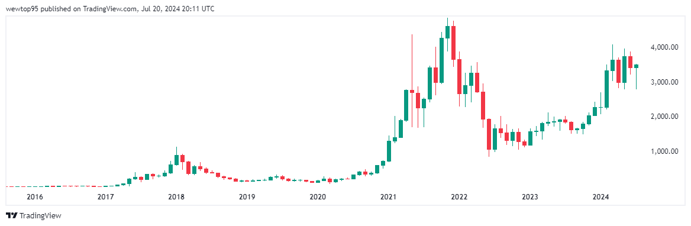
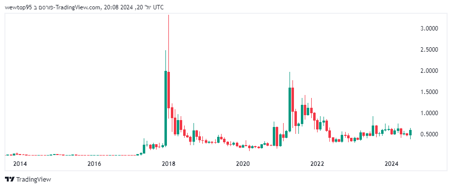

מטבעות וירטואליים ומטבעות סטנדרטיים (פיאט) משמשים למטרות שונות בשוק. מטבעות וירטואליים, כמו ביטקוין ואתריום, מציעים פתרונות מבוזרים וחדשניים אך עם תנודתיות גבוהה. הם מהווים חלופה למערכות פיננסיות מסורתיות ומציעים אפשרויות השקעה שונות. מטבעות פיאט, כמו דולר או יורו, מבוססים על ערבות מדינות ונחשבים ליציבים יותר. צמדים של מטבעות וירטואליים עם פיאט מאפשרים סחר והשקעה בגורמים שונים, כאשר הערך שלהם תלוי בשוק הוירטואלי ובמצב הכלכלה הפיאטית. השילוב בין השניים יוצר חיבור בין השוק הדיגיטלי למסורתי, עם יתרונות וחסרונות לכל צד.
שוק הקריפטו הפך בשנים האחרונות למרכזי בזירת ההשקעות הגלובלית, עם ביטקוין, אתריום וריפל בראשו. הביטקוין, המטבע הקריפטוגרפי הראשון והנפוץ ביותר, ממשיך לשמש כאבן הפינה של השוק, עם שווי שוק גבוה ונזילות רבה. לעומתו, אתריום מציע פלטפורמה חכמה לביצוע חוזים חכמים ויישומים מבוזרים, מה שהפך אותו לפופולרי בקרב מפתחים ומשקיעים כאחד. ריפל, מצידו, ממוקד בעיקר בשוק הפיננסי ומשמש גשר בין מערכות תשלומים שונות באמצעות טכנולוגיית הבלוקצ'יין שלו. הביטקוין נחשב לזהב הדיגיטלי, כשלפניו ניצבות הזדמנויות רבות אך גם סיכונים בגלל התנודתיות הגבוהה. אתריום מציג יתרונות טכנולוגיים משמעותיים בזכות הרשת המבוזרת שלו, אשר מאפשרת פיתוח מגוון של יישומים. ריפל, לעומת זאת, מספק פתרונות מהירים וזולים להעברת כספים בינלאומית, מה שהופך אותו למועדף על ידי מוסדות פיננסיים. התחום ממשיך להתפתח במהירות, עם חידושים טכנולוגיים ורגולציות משתנות המשפיעים על השוק כולו.
| מטבעות: | BTC |
Ethereum  |
XRP |
|---|---|---|---|
| לצפייה בגרף המטבע: | לצפייה בגרף | לצפייה בגרף | לצפייה בגרף |
| ניתוח טכני: | אינדיקטור טכני | אינדיקוטור טכני | אינדיקטור טכני |
| הסטוריה: |  |  |  |
| ניתוח פנדומנטלי: | מאמרים אחרונים | מאמרים אחרונים | מאמרים אחרונים |